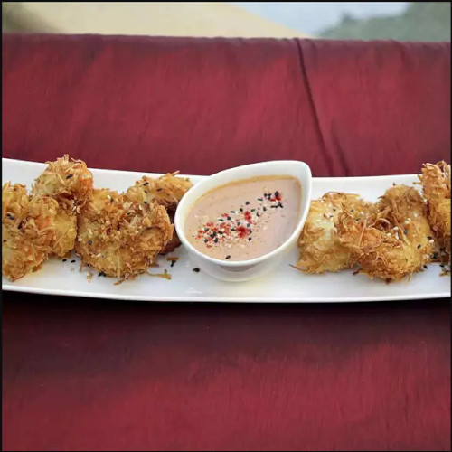

Keto Coconut Shrimp

Description
Mixing the sweet hints of coconut with the exquisite delights of shrimp is a masterful combination that leads to one of the best selling seafood dishes out there. And now, you can have this luxury in the comfort of your own home. And for those with a carb conscious outlook - This recipe is keto friendly! All you need is some basic ingredients, a little time, and you'll have an amazing meal fit for a king!
Just a warning however - We take no responsibility for over indulgence of this delectable treat!
Ingredients
- 1 pound jumbo shrimp, peeled and deveined
- 1/4 cup coconut flour
- 1/2 teaspoon onion powder
- 1/2 teaspoon garlic powder
- 2 eggs, or more if needed
- 1 cup macadamia nuts
- 1 cup unsweetened shredded coconut
- 2 tablespoons ghee, or more to taste
- 1 pinch sea salt and ground black pepper to taste
Steps
- Line a cookie sheet with parchment paper. Line a second cookie sheet with several layers of paper towels.
- Mix coconut flour, onion powder, and garlic powder in a small bowl. Whisk eggs thoroughly in a second bowl.
- Grind macadamia nuts in a food processor until coarsely chopped. Avoid overmixing or they will start to clump. Empty ground nuts into a third bowl, mix in coconut until blended.
- Place each shrimp in coconut flour mixture, lightly coating all sides. Dip in the egg, and finally the macadamia-coconut mixture. Place on parchment-lined cookie sheet. Repeat with remaining shrimp.
- Heat ghee in a large skillet over medium heat until melted; add shrimp. Cook, turning often, and adding more ghee as needed, until golden brown and evently cooked. 1-1/2 to 2 minutes per side. Drain shrimp on paper towels. Serve with salt and pepper to taste.